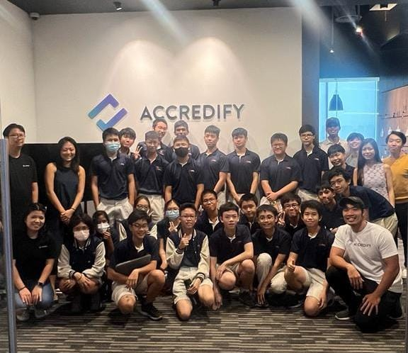

Visit to Accredify
Enrichment program held by the IDP department
The Experience
Hosted by Accredify, this program taught us all about what Accredify did, which was the creation of e-documentations for travel and general use. The e-documentation they created is recognised by the government, and the way that the e-documentation works makes it so it is very secure and only the owner, who has the encription key will be able to access the documents that they have. We also learnt more about blockchain, how blockchain works. I found it really interesting as blockchain is something that is new to me, and the fact that just having your computer on will allow you to earn money is a concept that I was new to.

Learning
This learning journey was enlightening as it broadened my perspectives on the digital world, how money can be made online, as well as the importance of an online ecosystem. Specifically, the e-documentation is crucial, especially during the COVID-19 period as it was a period of time where identification is really important. Tracking who has went where is important for the wellbeing of the country and Accredify has taught me that importance.